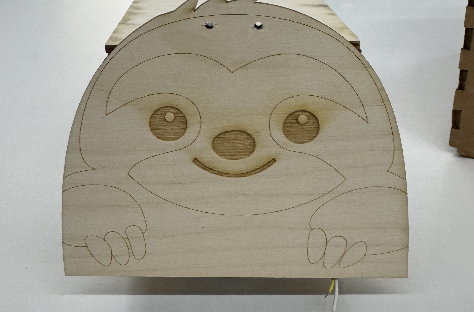
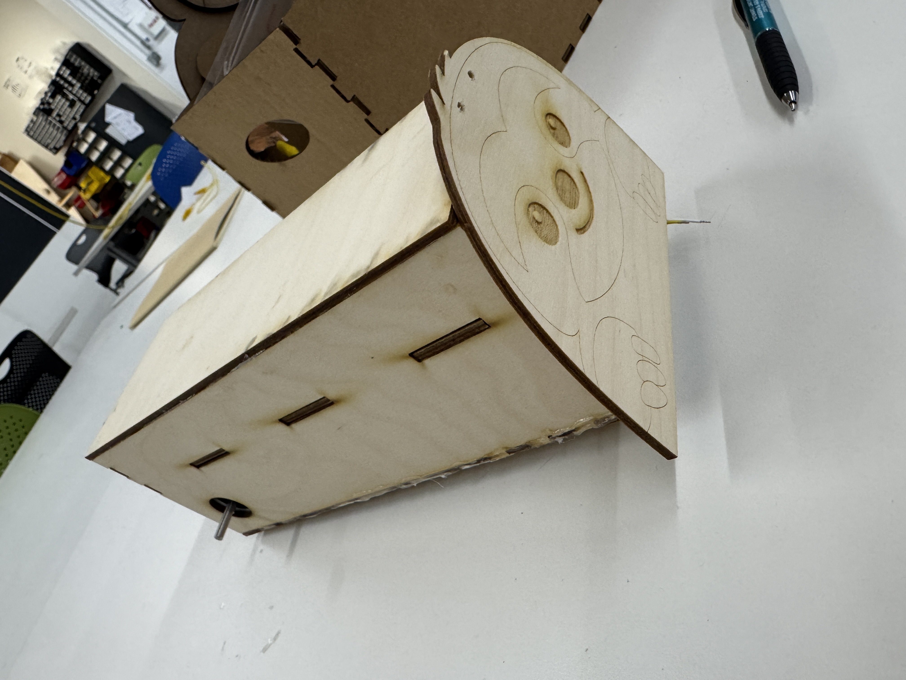
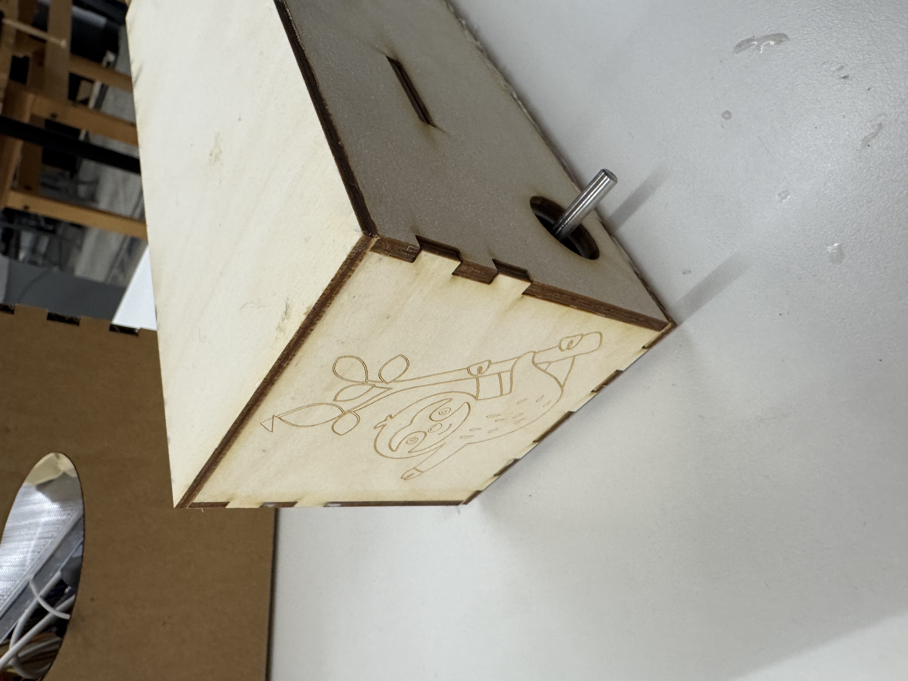
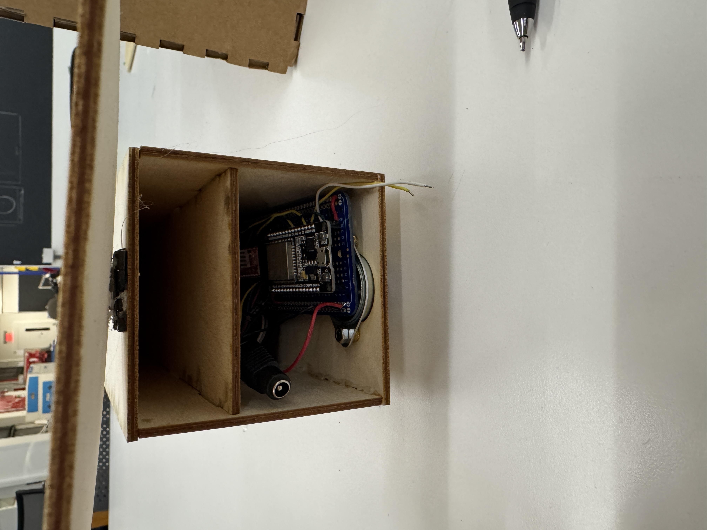

<div class="textcontainer">
<p class="margin"> </p>
<h3>Week 8: CNC Milling</h3>
<h4>Assignment 1: Final Project Update</h4>
Last week, one of my stepper motors wasn't moving. Turns out it's because my stepper motor drivers weren't working.
So, this week I desoldered both of them and also the microcontroller from the breadboard and made it more flexibnle.
Also, one of my stepper motor driver dir pins wasn't working and now it does so the car can go backwards!
<br>
<a href='./cad_dxf.zip' download > Download my most recent CAD </a> <br>
Here is a video of the car moving both backwards and forward.<br>
<video controls style="width: 200%; flex-shrink: 0; max-width: 400px;">
<source src="./backwardforward.mp4" type="video/mp4">
Your browser does not support the video tag. <a href="./backwardforward.mp4">Download the video</a> instead.
</video>
<br>
Here is a demo of my car just moving backwards (like in my final).<br>
<video controls style="width: 200%; flex-shrink: 0; max-width: 400px;">
<source src="./final_movement.mp4" type="video/mp4">
Your browser does not support the video tag. <a href="./final_movement.mp4">Download the video</a> instead.
</video>
<br>
Here is my final exterior design.<br>
<p></p> <br>
<p></p> <br>
<p></p> <br>
<p></p> <br>
<h4>Assignment 2: Make Something With CNC</h4>
</div>